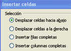
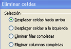
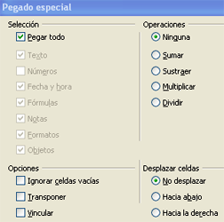

2.1. Área de trabajo: filas, columnas y celdas
Importante
Una característica de todos los programas de hojas de cálculo es que el área de trabajo se presenta en forma de tabla de celdas, creadas por filas y columnas.
- Las columnas se nombran con letras y suelen ser 256. Primero se nombran de la A a la Z y después continúan con AA, AB, ... hasta llegar a AMJ.
- Las filas se nombran con números y el máximo es 65.536.
Comprueba lo aprendido
Funciones de edición
Insertar- Las filas se insertan por encima de la celda activa y las columnas a su izquierda. - Si estás seleccionadas varias, se insertarán el mismo número. - Se pueden insertar filas o columnas enteras o un grupo de celdas. |

|
Eliminar- Se puede eliminar el contenido de una celda, con lo cual la celda permanece. - Se pueden eliminar celdas, filas o columnas, lo que provoca un desplazamiento del resto.
|

|
Copiar/pegar- Funciona como en otros programas, primero hay que seleccionar y después ejecutar la opción. - La opción pegado especial de celdas, permite pegar sólo el texto, fórmulas o formatos. También se pueden realizar operaciones y realizar otras opciones sobre las celdas. |

|
||
Ejercicio resuelto
Presta atención a las siguientes cuestiones:
- ¿Cómo te colocas en la hoja activa?
- ¿Cómo se activa una celda?
- Modifica el contenido de la celda B4 y escribe el número 4. ¿Cómo puedes hacerlo?
- Colócate en la fila 4 e inserta una fila. ¿En qué celda queda ahora el número?
- Colócate en la columna B e inserta una columna. ¿En qué celda queda ahora el número?
- Por último, ¿cuál es la ultima celda que podríamos usar?
Para saber más
| Inicio | Activa la primera celda de la fila |
| Tab | Activa la celda situada a la derecha |
| May + Tab | Activa la celda situada a la izquierda |
| CTRL + Inicio | Activa la celda A1 |
| CTRL + Fin | Activa la última celda que contenga datos |
Obra publicada con Licencia Creative Commons Reconocimiento No comercial Compartir igual 4.0